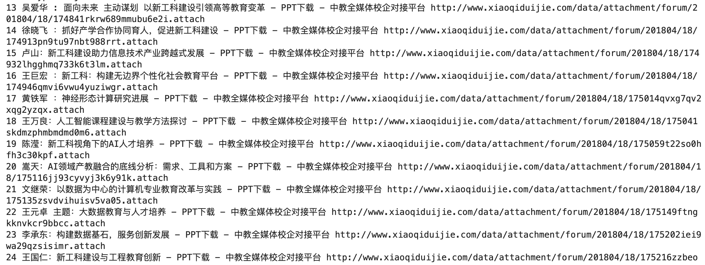

日常生活和学习中，经常需要在某网站下载PPT等大量文件，由于文件分散在多个网页，或者一个网页有太多的下载链接，如果逐个点击下载，工作量较大。如何利用所学python知识按照指定规则自动下载需要的文件呢？

你想要教别人实现一个什么功能？直接展示实验的结果截图。
import requests
from bs4 import BeautifulSoup
base_url = 'http://www.xiaoqiduijie.com/forum.php?mod=viewthread&tid='
for i in range(1,1000):
try:
soup = BeautifulSoup(requests.get(base_url+str(i)).content)
print(i, soup.title.text, soup.select_one('div#pdfview')['data-pdf'])
pdf = soup.select_one('div#pdfview')['data-pdf']
fname = 'ppt/'+soup.title.text.split('-')[0] + '.pdf'
with open(fname, 'wb') as f:
f.write(requests.get(pdf).content)
except Exception as e:
print(e)
打开上述链接，对问题进行详细的描述，我们在收到问题后，第一时间予以解答。